This project aimed to implement various aspects of geometric modeling to create a tool that takes in basic COLLADA mesh files which we can then edit. To successfully build this tool, we implemented Bezier curves and surfaces de Casteljau's algorithms, half-edge flips and splits, and loop subdivision for mesh upsampling.
To create Bezier curves, we use de Casteljau's algorithm to evaluate a set of control points which output a
single point for evaluation. In the first step (or level), given n control points and a value t, we iterate through all
the points to get a set of (n-1) intermediate control points by evaluating the formula: p' = (1-t)p0 + tp1. In the
next step, we repeat this process except we start with (n-1) control points and output (n-2) intermediate
control points. This process is repeated until we have a single evaluated point.
Below are the steps of an evaluated Bezier Curve with six control points:
|
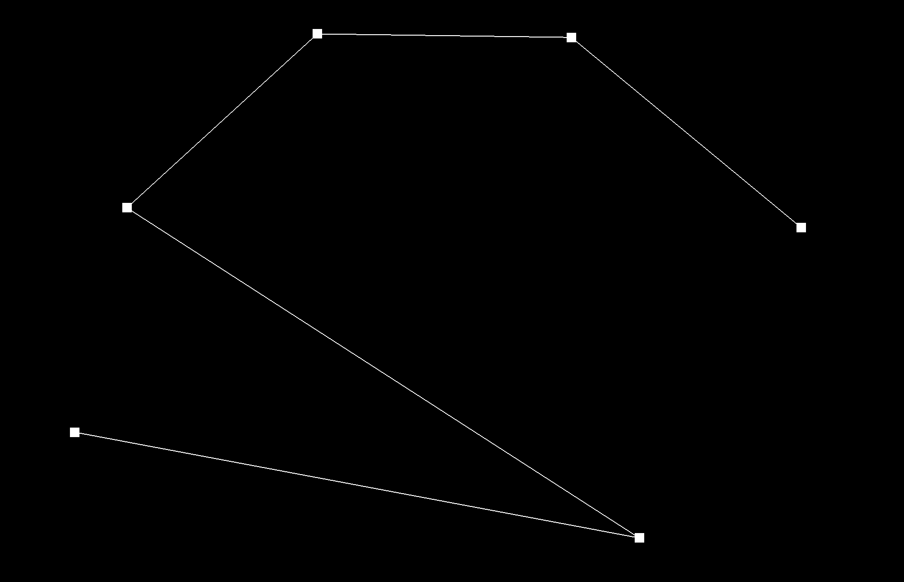
|
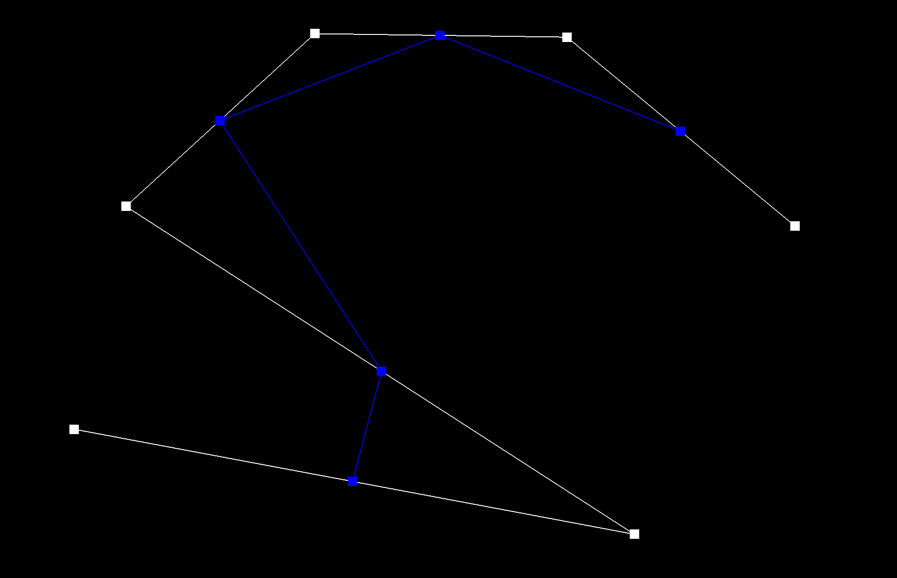
|
|
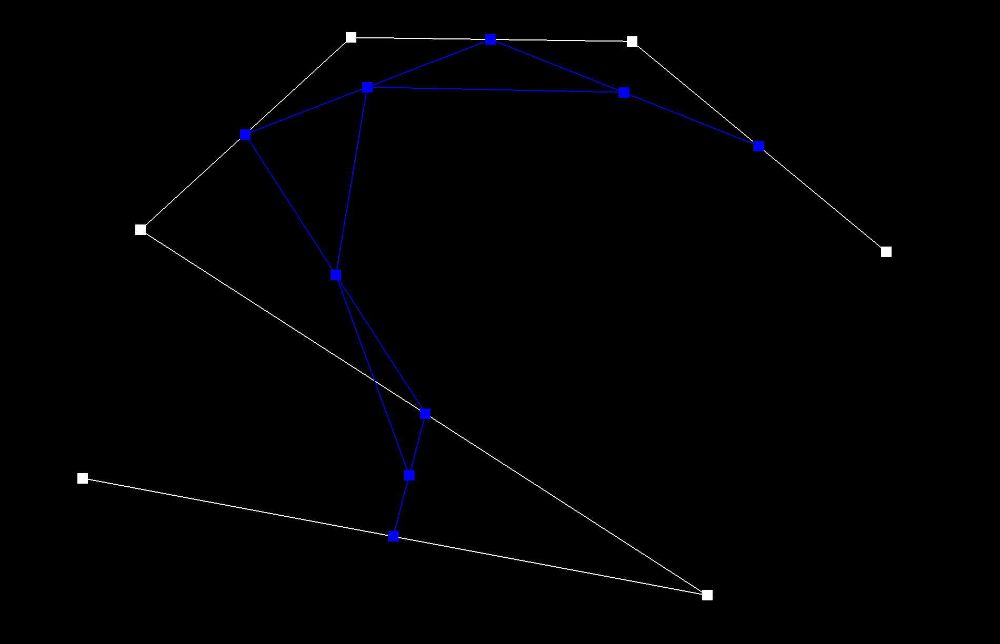
|
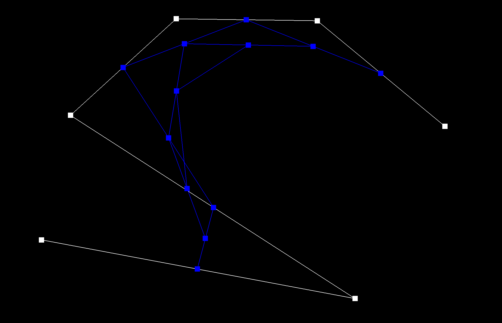
|
|
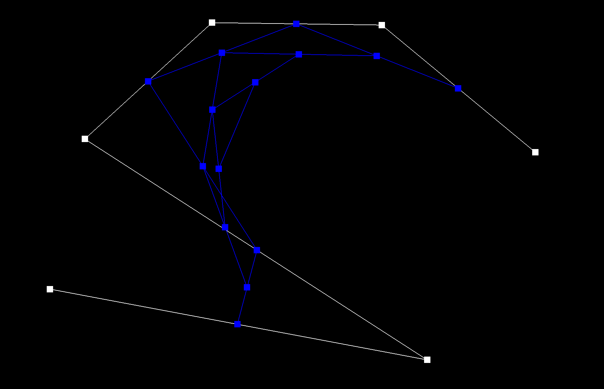
|
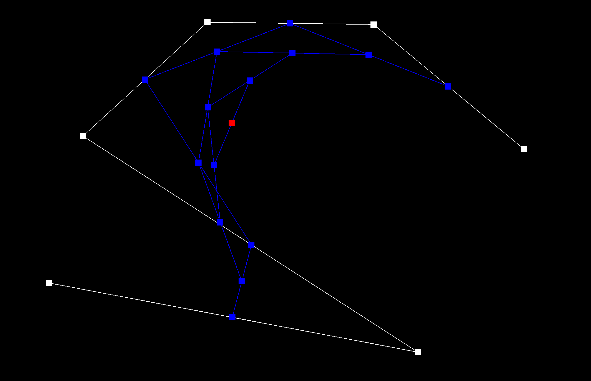
|
The next two images are based on a different curve which I created by moving the six points around. The second image is when I modified the value t by scrolling over the GUI.
|
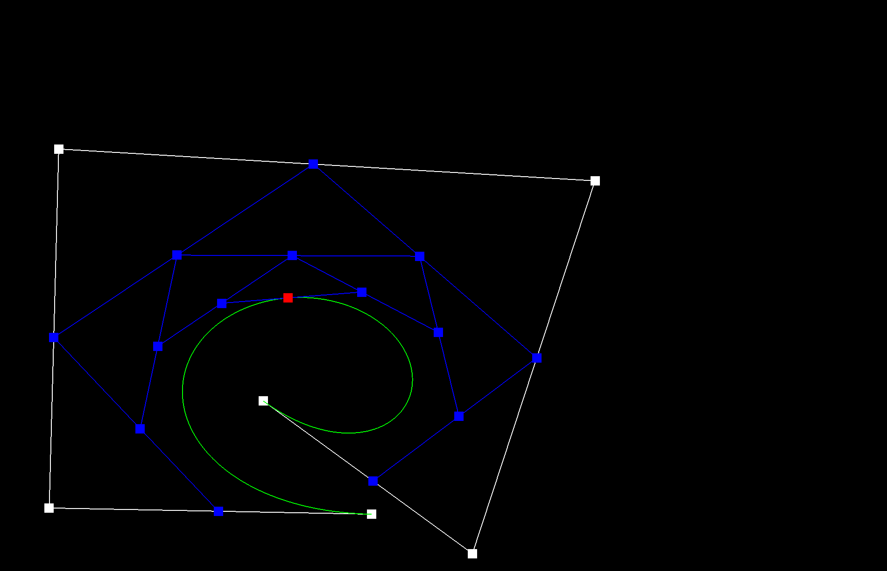
|
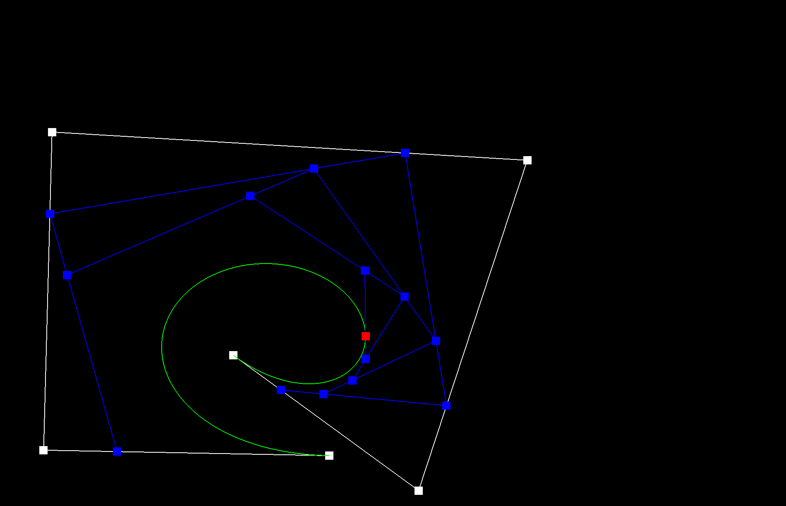
|
Bezier surfaces are created from taking the Bezier curves in two dimensions. Given a surface point (u,v),
we can first use de Casteljau's algorithm in the u-direction by finding the four Bezier curves in the u-direction.
Evaluating u on each of these four curves will then give us a new set of control points which we can use in a final
call to de Casteljau's algorithm with parameter v which will output a final evaluated point for the Bezier surface.
To evaluate the Bezier surface at parameters (u, v) through 2D de Casteljau subdivision, I first
instantiated an array which will be filled with the control points for the "moving" Bezier curve
after evaluating point u on each of the four Bezier curves in the u-direction. This is done by
iterating through each row in the 2D array, controlPoints, and then applying de Casteljau's algorithm
with the ith-row of control points and u.
This process is made easier when I implemented the helper function, evaluate1D, which evaluates the Bezier
curve at parameter t (passed in as u from evaluating the Bezier patch) using 1D de Casteljau subdivision.
Given an array of control points, I recursively calculate the intermediate control points until I am left
with a single and final evaluated point.
Once I had the array of new control points, I then evaluated point v on the "moving" Bezier curve by performing
1D de Casteljau algorithm on the new controls points with parameter v. Finally, we output the final evaluated
point for the Bezier surface.
Using this method, we can render objects such as this teapot:
| 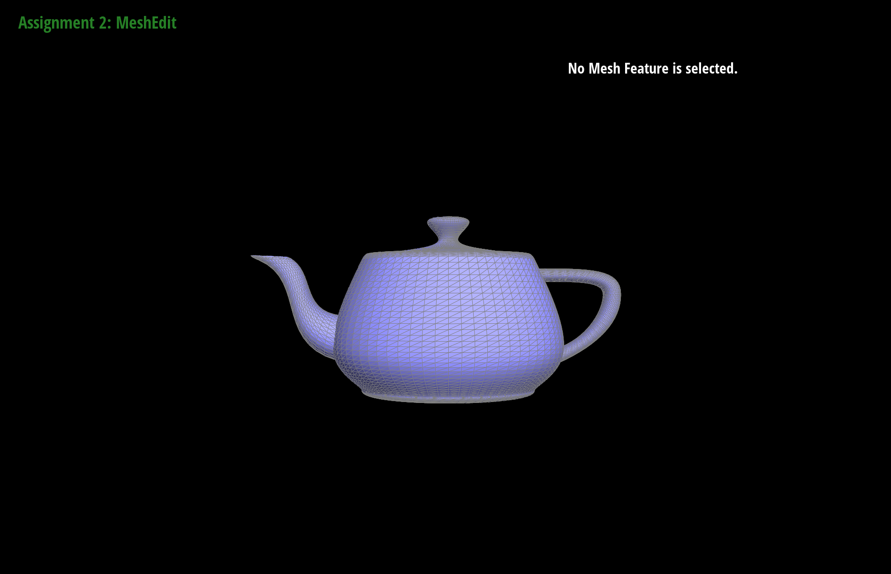 | 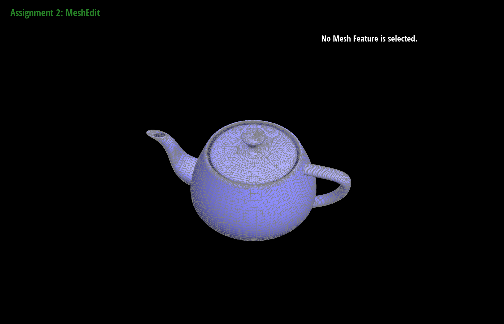 |
In the images in the left column down below, the teapot looks very low-poly and one can obviously see the rectangular
indentations that make up the mesh. However, we can introduce more realistic shading than the default flat shader such
that the teapot looks smooth by calculating the cross product of two of the triangle's edges. The magnitude of the
cross product is proportional to the triangle's area so this gives us the area-weighted average normals at a vertex.
We begin with a halfedge and traverse through the neighboring triangles surrounding the halfedge's point. Given a vertex,
call it point v0, we find the vertex positions of the remaining two points of the triangle by getting the h->next()
halfedge (point v1) and the h->next()->next() halfedge (point v2). Then we compute the difference vectors, v1-v0 and
v2-v0, and take the cross product of the resulting two edges. We accumulate all the normals and then return a
re-normalized unit vector.
| 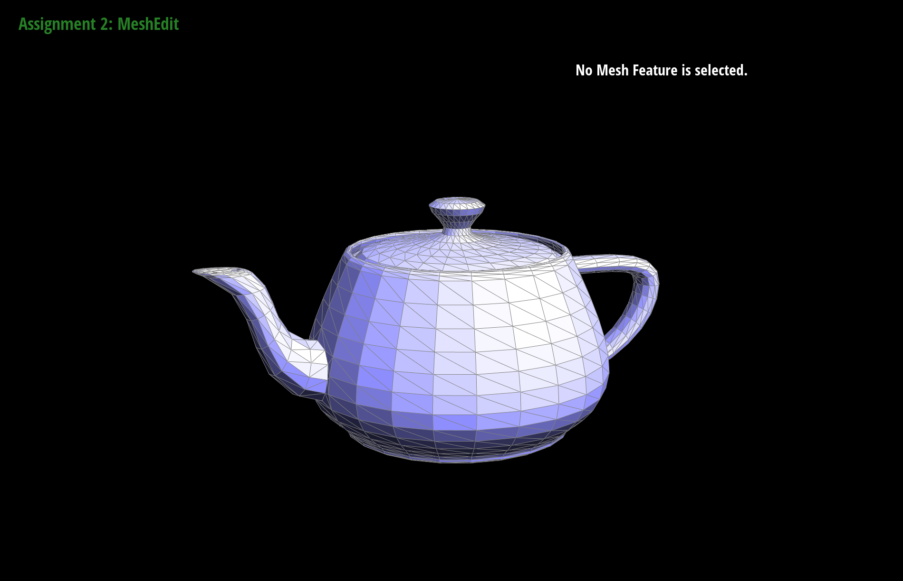 | |
|
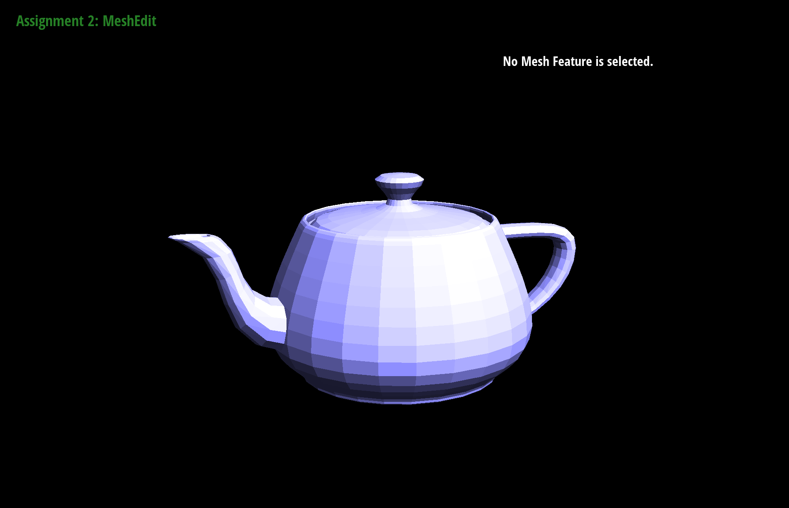
|
|
In order to implement the half-edge flip, I drew a diagram of two triangles which share an edge that is annotated with all the related halfedges, edges, faces, and vertices. I kept careful track of how halfedges moved once the shared edge was flipped so that it would be easier for reassignments in my implementation. The diagram also served as a helpful debugging tool where I could inspect if I had incorrectly reassigned a variable. In the half-edge flip function, I stored values for each halfedge, vertex, edge, and face then reassigned each of the variables one by one. The helper function, setNeighbor, was very helpful and convenient to use in this part.
|
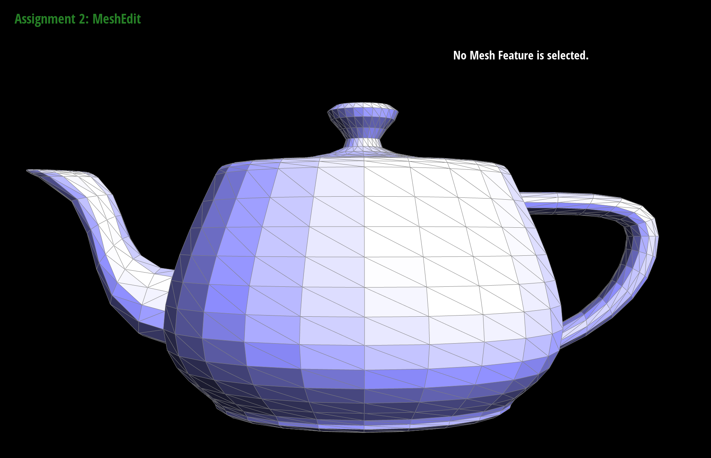
|
|
| 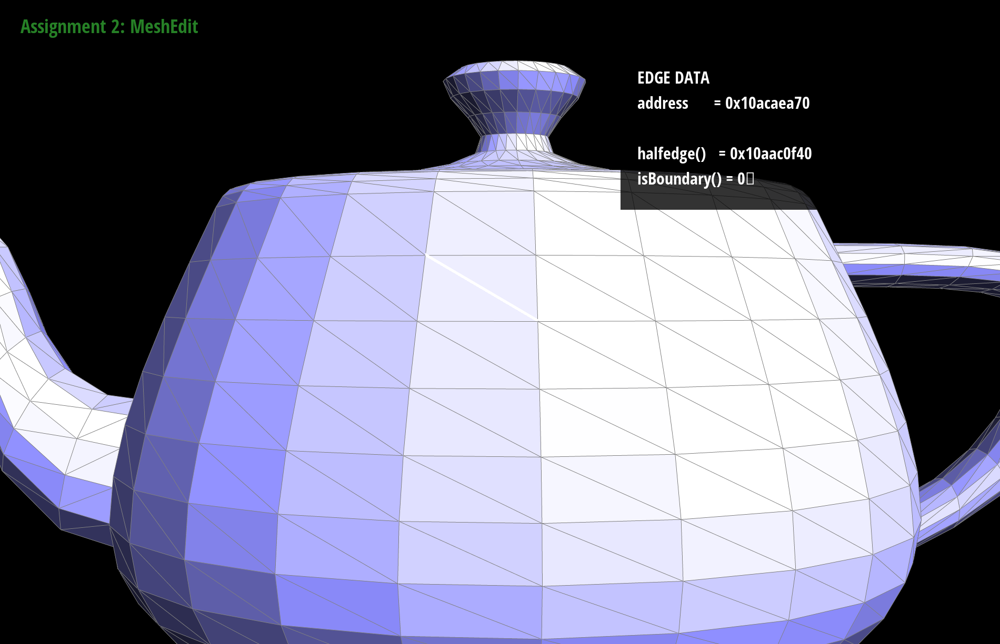 | 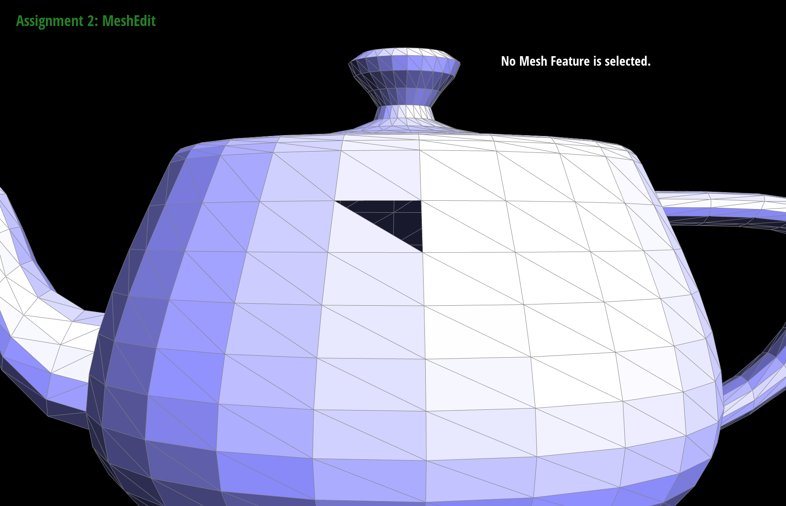 |
I did run into a problem where every time I would try to flip an edge, the face kept disappearing. At first, I thought it was an issue where I was incorrectly reassigning a face to a halfedge but after inspecting all the halfedges, my implemented at that section seemed to be good. I also realized that the halfedge was not actually flipping. That led me to believe that a reassignment was wrong. I then literally went back to the drawing boards to my diagram to confirm that I had assigned everything correctly. Finally, upon inspection of the entire block of code, I realized I had in fact incorrectly assigned a variable. When I was storing a halfedge in a local variable, I accidentally assigned it to the twin() edge when I intended to assign it to the next() edge. A small mistake that proved difficult to find but easy to fix.
Building off of Part 4, I also used a diagram, this time color coded to easily distiguish between the various
elements, to help me visualize how each element would need to be reassigned and what new objects would be created.
In the half-edge split function, I first created a new vertex, three new edges, two new faces, and six new
halfedges which were necessary when a half-edge split occurred. Then analogously to Part 4, I stored locally each
related halfedge, vertex, edge, and face then reassigned each of the variables one by one.
There were no debugging quests this time around. After my minor bugs in part 4, I paid extra attention to how I was
reassigning each element, and luckily my implementation worked on the first go.
|
|
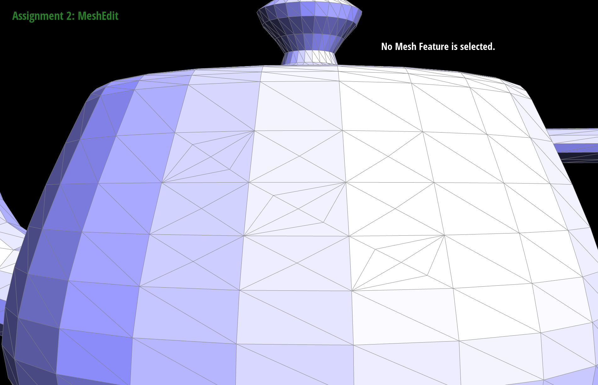
|
|
|
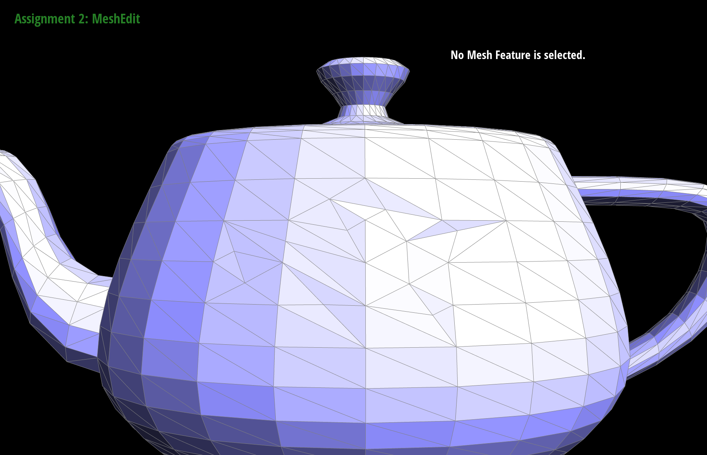
|
Loop subdivision upsamples a mesh by increasing the amount of triangles and then interpolating the vertices so
that a low-poly mesh becomes higher in resolution as you continue to apply more iterations of Loop subdivision.
In other words, the sharp corners and edges of the mesh start to smooth out.
To implement Loop subdivision, I followed the very helpful walkthrough on the project spec. We begin by
calculating the new vertex positions on the mesh because the weights depend on the neighboring vertices in their
original location. If we update as we go, we will end up averaging vertices that have themselves already been
averaged which will change the appearance of the mesh. To calculate the new positions of these original vertices,
we use the formula given in the project spec:
where n is the vertex's degree, u is a constant that equals 3/16 when degree=3 and 3/(8n) otherwise, and
neighbor_position_sum is the sum of the positions of the vertex's neighbors. We store these new positions in the
vertex's newPosition attribute which we will then transfer over later. Here we also mark each vertex as "old"
which will help us in future steps.
Next we compute the new weighted position of the vertices that are created when we split an edge. We don't actually
split the edges here, however. To calculate the positions of these new vertices, we use the following formula:
where A and B are the vertices connected to the edge and C and D are the vertices opposite to the edge. We store the
results in the edge's newPosition attribute and also mark each edge as "old."
Now that we have all the updated vertices, we can split each edge in the mesh, making sure that we only split edges that
were tagged as "old." As we split each edge, we mark these vertices as "new" and transfer over edge->newPosition over to
the vertex's newPosition. I also mark the newly created edges as "old" and "new" respectfully based on how I reassigned
elements in Part 5. An edge is "old" if it originated from an old edge whereas the other two are new.
We now have manipulated the mesh topology by splitting each triangle into four triangles, but the triangles vary in shape.
Thus, to equalize the each triangle's shape we flip any "new" edge that connects an old and new vertex.
Finally, we copy over the weighted position in vertex->newPosition to vertex->Position, which allows us to at last
upsample meshes:
I ran into several problems where the edges were not flipping properly during subdivision. And as a result, the icosahedron mesh ended up looking like a crumpled piece of paper. It took me a while before I realized that the bug occurred in my half-edge flip and split functions. Both had worked successfully (or so I thought) in parts 4 and 5, but I failed to recognize that certain connections weren't tested. My error was that I was reassigning halfedges outside of the two main triangles which led to incorrect behavior when splitting and flipping multiple edges as I traversed through each edge. After fixing this by only reassigning the halfedges relating to the two current triangles, my implementation worked successfully.
|
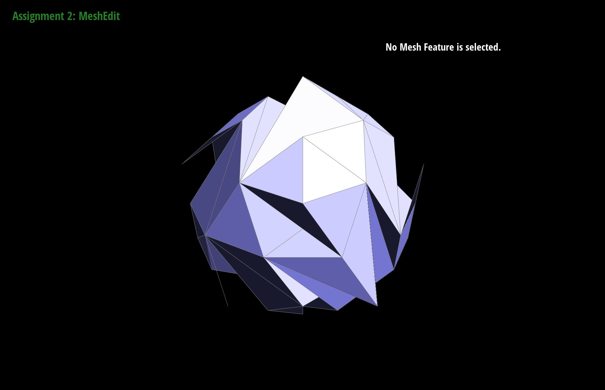
|
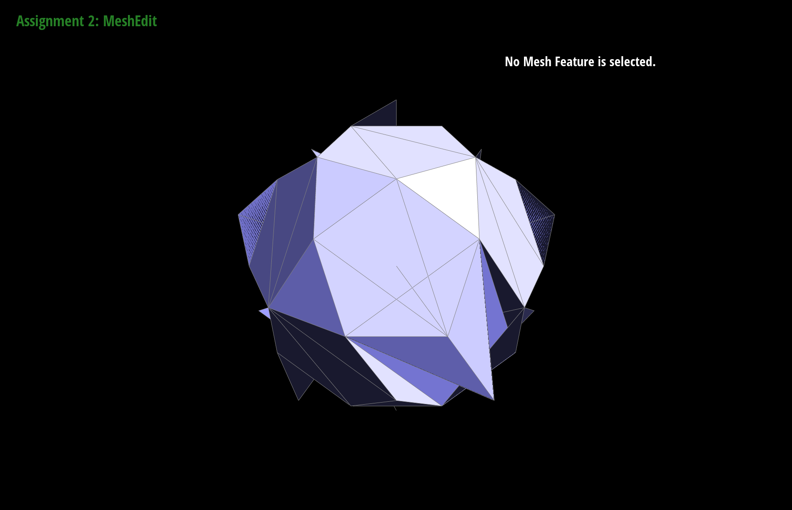
|
I further evaluated how repeatedly applying subdivision affects certain meshes. In dae/cube.dae, the cube subdivides asymmetrically:
The cube subdivides asymmetrically because of the way the diagonals (edges) are facing. Loop subdivision weights each vertice with respect to its neighbors so some vertices in the cube will be weighted more heavily because some vertices have a higher degree than others. Flipping edges prior to subdivision will not enable the cube to subdivide symmetrically because essentially all we are doing here is redistributing what the neighboring vertices are connected to. Still, some vertices will have a higher degree than others. However, if we first split edges, we can balance out all the vertices. In the instance of the cube, if we split edges such that each face now has four faces, we will get a symmetric cube during subdivision: